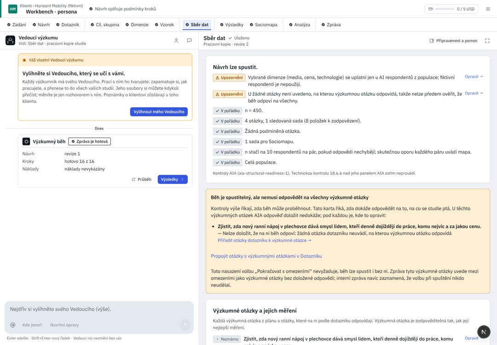
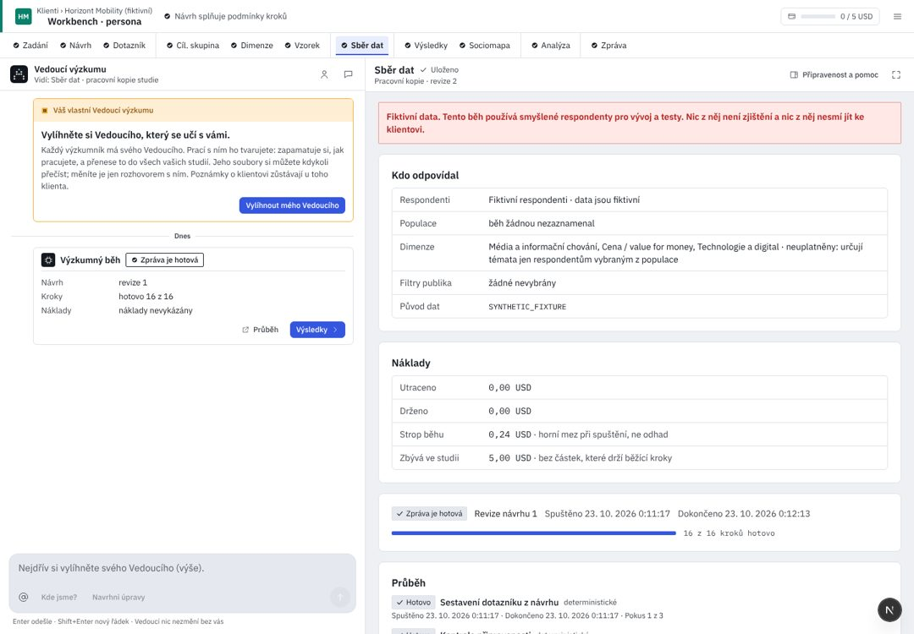

Klienti / Pivovar Zlatá Hora
Vnímání značek ležáků 2026
Sběr dat
VýsledkyCo spustíte
Lze spustit- Návrh
- Revize 8 · 23 otázek, 1 sada o 7 značkách · Dotazník
- Kdo odpovídá
- {{sourceNote}}
- Populace
- Česko 18+, živá verze · Pijáci ležáku 18–65 · N 400
- Cena nejvýše
- {{ceiling}}horní mez, ne odhad · nad prahem potvrzení 10,00 USD
- Rozpočet studie
- zbývá 38,80 USD z 50,00
2 upozornění neblokují: VO3 nic neměří; 2 dvojice na mapě budou slabé.
Všechny kontroly (9)
7 v pořádku · 2 upozornění · 0 brání
{{c.t}}
Na revizi 8 zatím běh není.
Utraceno
{{spentRun}}
Drženo pro běžící krok
{{held}}
Strop běhu
{{ceiling}}
Zbývá v rozpočtu studie
{{left}}
Analýza · Hypotézy čeká na rozpočet. Potřebuje nejvýše 0,90 USD, ve studii zbývá 0,32 USD. Nic se neztratilo.
Nový rozpočet{{liftLabel}}
Respondenti
Ukázka:{{respPhase}}
{{fwDone}} z {{fwN}} AI respondentů
{{respLine}}
Hotovo{{fwDone}}
{{fwPaidL}}{{fwPaid}}
Bloky převzaté z deníku · bloky otázek, ne lidé; bez platby{{fwRep}}
Zbývá{{fwLeft}}
Čekají na řadu{{fwWait}}
Zastaveno na rozpočtu{{fwPark}}
Přesně podle běhu, 1 : 1. Každá tečka je jeden AI respondent tohoto běhu; plná, až když ho běh zapíše jako hotového. Disk ukazuje jen hlášení běhu: kolik je hotovo z kolika, kolik bloků šlo modelu a kolik se převzalo z deníku. Hlášení chodí v dávkách, nový pokus počítá od nuly, fiktivní běh se naplní až na konci. Poloha říká jen pořadí.
Kroky běhu
{{doneN}} z 16 hotovo- {{t.n}}{{t.l}}{{t.detail}}{{t.kind}}{{t.word}}
UX kritika · Sběr dat
Krok spouští placený běh a ukazuje, jak postupuje. Dnes ho menu otevírá na kontrolním seznamu i během běhu, před tlačítkem Spustit je deset karet a peníze se jmenují pokaždé jinak. Kód d5d36b25; R/ = apps/web/src/components/rehome/research/.
Dnes: Kontrola a spuštění

Dnes: Průběh

{{c.l}}{{c.t}}
- {{x.t}}{{x.a}}